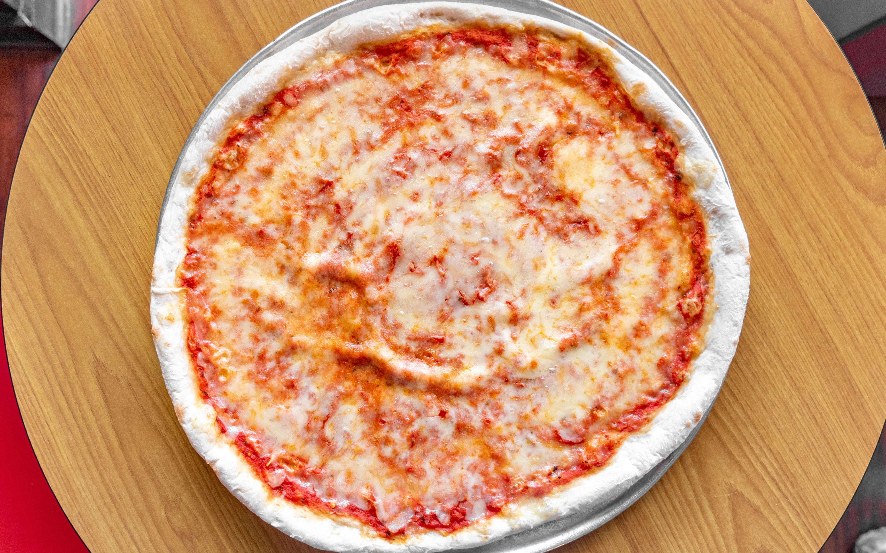

Slice of Cheese Pizza
A classic, thin-crust slice with bubbly mozzarella and savory tomato sauce.
Finding a good meal near the Petty building doesn't have to be a challenge for students. This blog explores three reliable food establishments located within a short walk of campus. We have selected a variety of options ranging from quick sandwiches to sit-down pizza and Mexican grill favorites. Whether you are between classes or staying late for a lab, these spots offer great fuel for your day.

Located just a short walk from Petty, Slices offers authentic New York style pizza. They specialize in affordable oversized slices and Italian snacks with convenient hours for lunch. Hours: 11 AM - 10 PM, open every day except sunday
A classic, thin-crust slice with bubbly mozzarella and savory tomato sauce.
Baked fresh and tossed in a buttery garlic herb blend, perfect for sharing.
A decadent dessert roll filled with creamy Nutella and dusted with sugar.
Image Credit: KW 5150, Slices by tony
Subway provides quick, customizable sandwiches and snacks right on the edge of campus. They are known for their highly nutritious food and are open late for student convenience. Hours: 24 hours on M/T/W/Th, 12 AM - 9 PM on F/Sat/Sun
A crunchy, fresh combination of your favorite garden vegetables on wheat bread.

A massive, warm chocolate chip cookie designed for the ultimate sweet tooth.
A crispy, cinnamon-sugar dusted treat served warm and perfect for snacking.
Image Credits: Chris Tuck, Subway
Chipotle is a campus staple for hearty Mexican-inspired bowls and burritos. It is a great spot for high-protein meals with fast assembly-line service but quite pricy. Hours: 10:45 AM - 11 PM

A warm flour tortilla packed with cilantro-lime rice, beans, and melted cheese.
All the great flavors of a burrito served in a bowl for easier eating on the go.

Crunchy, salty corn tortilla chips paired with their signature creamy queso blanco.
Image Credits: Jordon Burleson, Chipotle